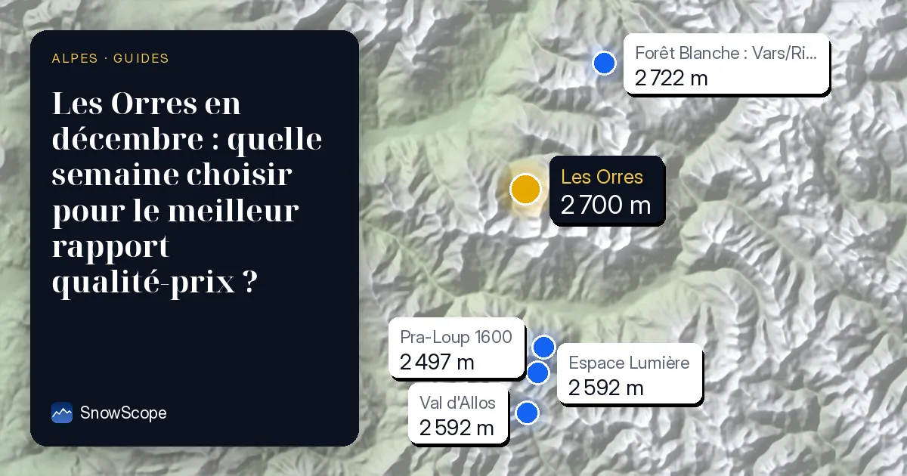

Les Orres en décembre : quelle semaine choisir pour le meilleur rapport qualité-prix ?
Si vous voulez skier aux Les Orres en décembre 2026 sans payer les tarifs de haute saison avant que la neige ne soit fiable en bas, vous devez faire correspondre le calendrier des tarifs avec notre historique de neige. La bonne semaine combine un prix plus bas et de bonnes chances d'avoir de la neige.
Consultez les prévisions neige en temps réel pour Les Orres sur l'application SnowScopeHauteurs de neige, alertes poudreuse et carte 3D, gratuitement.
Comment le prix évolue en décembre
Le site officiel montre que les prix du forfait adulte 1 jour changent au fil du mois. Du 5 au 11 décembre 2026, le prix basse saison est de 34 EUR. En passant à la mi-saison du 12 au 18 décembre 2026, le prix passe à 38,50 EUR. Une fois arrivé en haute saison à partir du 19 décembre 2026, le forfait adulte 1 jour coûte 45,50 EUR.
Ces changements de prix graduels vous permettent de choisir le bon moment pour votre visite. Vous payez moins cher au début du mois, mais vous devez vérifier si l'épaisseur de la neige correspond à vos attentes avant de réserver.

La neige de décembre à trois altitudes
Notre historique de neige de 46 hivers passés montre des différences claires entre le bas, le milieu et le sommet des remontées. Au bas des remontées à 1 554 m, l'épaisseur habituelle en décembre est de 23 cm, et l'épaisseur habituelle au 15 décembre est de 22 cm. Un mois de décembre peu enneigé apporte 3 cm ou moins dans 1 hiver sur 10, tandis qu'un mois de décembre très enneigé apporte 53 cm ou plus. À mi-montagne à 2 127 m, l'épaisseur habituelle en décembre est de 57 cm, avec 50 cm habituels au 15 décembre, et la fourchette entre peu et beaucoup de neige va de 19 cm à 112 cm. Au sommet des remontées à 2 700 m, l'épaisseur habituelle en décembre atteint 97 cm, avec 94 cm habituels au 15 décembre, allant de 41 cm lors d'un mois de décembre peu enneigé à 200 cm lors d'un mois très enneigé.
Le bas peut rester peu enneigé au début. La part d'hivers avec 30 cm ou plus en bas n'est que de 15 % du 1er au 7 décembre, montant à 26 % du 8 au 14 décembre, 41 % du 15 au 21 décembre, et 52 % du 22 au 28 décembre. À mi-montagne, la part d'hivers avec 30 cm ou plus est déjà de 61 % du 1er au 7 décembre, 78 % du 8 au 14 décembre, et atteint 87 % du 15 au 21 décembre et 89 % du 22 au 28 décembre. Au sommet, la part est de 87 % du 1er au 7 décembre et grimpe à 96 % du 15 au 28 décembre.
En ce moment, les chiffres de neige pour le 13 novembre 2026 montrent 0 cm au bas des remontées avec 2 cm de neige fraîche attendus dans les 7 prochains jours. À mi-montagne, il y a 1 cm avec 29 cm de neige fraîche attendus, et au sommet, il y a 10 cm avec 40 cm de neige fraîche attendus. Les prévisions de neige fraîche sur deux semaines du 13 novembre 2026 au 26 novembre 2026 pour le milieu et plus haut indiquent une moyenne de 67 cm dans une fourchette de 55 à 80 cm.
La semaine où le prix et la neige s'accordent
Mettez les deux calendriers côte à côte : le meilleur accord, c'est la semaine de moyenne saison, du 12 au 18 décembre 2026. Le forfait adulte 1 jour coûte alors 38,50 EUR, contre 45,50 EUR à partir du 19 décembre, et les chances de neige sont bien meilleures que les premiers jours.
À mi-pente, il y avait 30 cm ou plus dans 78 % des hivers passés du 8 au 14 décembre et dans 87 % du 15 au 21 décembre ; au sommet, c'était 96 % pendant la seconde moitié du mois. Vous skiez donc le haut du domaine sur une bonne base tout en payant le tarif de moyenne saison, avant les prix de Noël.
Comparaison avec Vars-Risoul
Il est utile de comparer Les Orres avec la station proche de Vars-Risoul pour voir comment les chiffres se comparent. Vars-Risoul offre un domaine skiable plus grand avec 131 km de pistes balisées et 38 remontées, comparé au domaine des Les Orres avec 54 km de pistes et 21 remontées. Le dénivelé est similaire, avec Vars-Risoul allant de 1 632 m à 2 722 m, et Les Orres allant de 1 554 m à 2 700 m.
En termes de neige, Vars-Risoul affiche une épaisseur habituelle en décembre de 33 cm à la base (1 632 m), 51 cm à mi-montagne (2 177 m), et 77 cm au sommet (2 722 m). Son épaisseur habituelle au 15 décembre est de 32 cm à la base, 48 cm à mi-montagne, et 76 cm au sommet. Pour les prix, Vars-Risoul propose un forfait adulte 1 jour Forêt Blanche pour l'hiver 2026-27 à 58 EUR, et un forfait adulte 6 jours à 298 EUR. Les Orres vous offre des tarifs journaliers plus flexibles commençant à 34 EUR en basse saison, ce qui en fait un choix plus économique si vous visez les bonnes semaines.
Ce qui a changé depuis les années 1980
En regardant nos 46 hivers passés, les moyennes de décembre montrent une évolution positive de l'épaisseur de neige aux altitudes plus élevées. Si nous comparons les 15 premiers hivers (1980-81 à 1994-95) avec les 15 derniers hivers (2011-12 à 2025-26), les chiffres racontent une histoire intéressante. À mi-montagne, la moyenne de décembre était de 44 cm lors des 15 premiers hivers, et elle est montée à 58 cm lors des 15 derniers hivers. Au sommet des remontées, la moyenne de décembre était de 76 cm lors des 15 premiers hivers, et elle a augmenté à 101 cm lors des 15 derniers hivers.
Au bas des remontées, la moyenne de décembre est passée de 21 cm lors des 15 premiers hivers à 24 cm lors des 15 derniers hivers. Le mois de décembre le plus pauvre en neige enregistré à mi-montagne était de 2 cm lors de la saison 2015-16, tandis que le mois de décembre le plus enneigé à mi-montagne a atteint 128 cm lors de la saison 1996-97. L'hiver dernier, la saison 2025-26 a apporté une moyenne de décembre de 19 cm en bas, 42 cm à mi-montagne, et 72 cm au sommet.
Conseils aux skieurs
- Réservez votre forfait de ski sur le site officiel pour la semaine du 12 au 18 décembre 2026 afin de garantir le tarif mi-saison de 38,50 EUR avant que les prix de haute saison ne commencent le 19 décembre.
- Concentrez votre ski à mi-montagne (2 127 m) et au sommet (2 700 m) en décembre, où la part d'hivers avec 30 cm ou plus est de 87 % à 96 % durant le milieu du mois.
- Consultez la bulletin local des avalanches avant de skier hors-piste, surtout lorsque les totaux de neige fraîche des prévisions ajoutent de la profondeur aux altitudes élevées.
- Attendez-vous à une couverture fine à la base (1 554 m) au début du mois, où l'épaisseur habituelle de décembre n'est que de 23 cm et la part d'hivers avec 30 cm ou plus n'est que de 15 % du 1er au 7 décembre.
Autres cartes (sites externes)
Références et crédits
- Les Orres, official ski pass prices 2026-27 www.lesorres.com/forfaits-de-ski
- Risoul, official ski pass page, Forêt Blanche 2026-27 risoul.labellemontagne.com/fr/hiver/forfaits/risoul-foret-blanche/
- Risoul, official 6-day Forêt Blanche pass page 2026-27 risoul.labellemontagne.com/fr/hiver/forfaits/6-jours-foret-blanche/
- SnowScope, December snow at three heights and today's snow map snowscope.app/
À propos de ces chiffres
Chiffres de neige : historique SnowScope, 46 hivers passés (1980-81 à 2025-26) à trois altitudes de chaque station (un modèle du passé corrigé de l'altitude : une estimation pour une zone, pas des mesures de la station) ; chiffres de décembre calculés à partir des hauteurs quotidiennes de ces hivers. Neige actuelle et tendance à deux semaines : prévisions SnowScope (tendance ECMWF et GFS, une fourchette, pas une promesse). Remontées et pistes : cartographie OpenSkiMap. Prix : pages officielles des stations ci-dessous, lues le 2026-11-13 ; les prix peuvent changer, vérifiez avant de réserver.
Bulletins d'avalanche officiels: Météo-France – Bulletin d'estimation du risque d'avalanche
Citer ce bulletin
Pour la recherche, l'enseignement ou la presse : chiffres et graphiques réutilisables librement sous CC BY 4.0 avec cette citation.
SnowScope (2026), Les Orres en décembre : quelle semaine choisir pour le meilleur rapport qualité-prix ?, https://snowscope.app/blog/fr/2026/11/les-orres-december-ski-week-by-week-prices-2026.html, consulté le 2026-11-14
SnowScope (Atlas Labs). (2026, November 14). Les Orres en décembre : quelle semaine choisir pour le meilleur rapport qualité-prix ?. SnowScope snow reports. https://snowscope.app/blog/fr/2026/11/les-orres-december-ski-week-by-week-prices-2026.html
BibTeX
@misc{snowscope2026lesorresdecemberskiweekb,
author = {{SnowScope (Atlas Labs)}},
title = {Les Orres en décembre : quelle semaine choisir pour le meilleur rapport qualité-prix ?},
year = {2026},
month = nov,
howpublished = {\url{https://snowscope.app/blog/fr/2026/11/les-orres-december-ski-week-by-week-prices-2026.html}},
note = {Published 2026-11-14 15:51 UTC; accessed 2026-11-14}
}· CC BY 4.0 · Méthodes, données et outils →
Les Orres : neige et température selon l'altitude, cet hiver vs l'hiver dernier (outils) →
Suivre Les Orres
Gratuit : un message quand la neige arrive, et la météo chaque matin.
Autres bulletins neige

Un séjour de 3 jours pas cher au lac de Côme en décembre, avec les vrais prix 2026-27 : trains, bateaux, funiculaire et ski à Piani di Bobbio ou Madesimo, l'économie par rapport à Cortina et les chances de neige à Noël.

Les hauteurs de neige en Alpes sont en retrait par rapport à la normale en début novembre, avec seulement 55 cm dans les meilleures stations au 3 novembre.